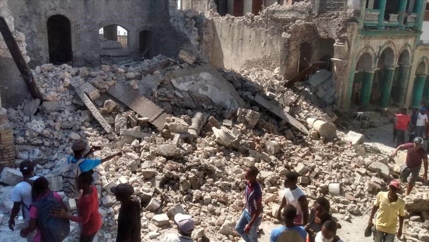
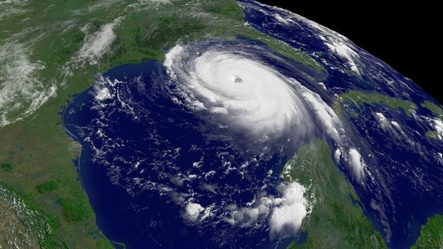
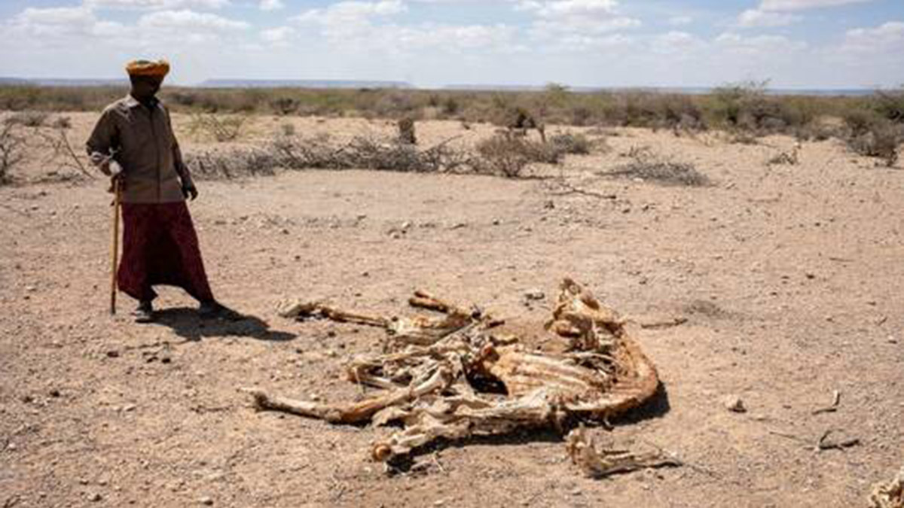
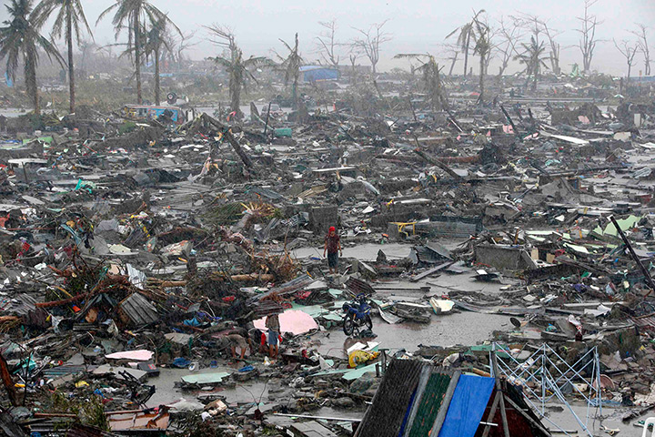

Los desastres naturales son eventos extremos que ocurren en la naturaleza
y que tienen consecuencias devastadoras para las personas y el medio
ambiente. Entre ellos se encuentran terremotos, tsunamis, huracanes,
inundaciones y sequías, entre otros.
Estos desastres pueden causar la pérdida de vidas humanas, la destrucción
de infraestructuras, la pérdida de medios de vida y la degradación del
medio ambiente. Por eso, es importante estar preparados y tener planes de
emergencia en caso de un desastre.
Además, es importante tomar medidas para reducir la vulnerabilidad de las
personas y las comunidades ante los desastres naturales. Esto incluye la
construcción de infraestructuras resilientes, la planificación del uso del
suelo y la conservación de ecosistemas naturales, entre otras medidas.
Como dijo una vez la activista climática Greta Thunberg: "El cambio
climático no es una política, es una emergencia". Debemos tomar en serio
la amenaza de los desastres naturales y trabajar juntos para reducir su
impacto en nuestras vidas y en el planeta. Los desastres naturales son una
realidad que no podemos ignorar. Debemos tomar medidas para prepararnos y
reducir nuestra vulnerabilidad ante estos eventos extremos, y trabajar
juntos para abordar las causas subyacentes, como el cambio climático, y
proteger el medio ambiente y las comunidades afectadas.
Nadie nunca está a salvo de sufrir un desastre que provoque la naturaleza,
no existe ningún país que no haya sufrido estos ataques naturales.
Terremotos, huracanes, ciclones, inundaciones, tsunamis, erupciones
volcánicas y más, en esta lamentable lista de 9 desastres que paralizaron
al mundo entero.
NUEVE DE LOS PEORES DESASTRES NATURALES DE LA HISTORIA
Terremoto de Haití (2010)
El terremoto de Haití de 2010 fue registrado a las 16:53:09, hora local (21:53:09 UTC), del martes, 12 de enero con epicentro a 15 km de Puerto Príncipe, la capital haitiana. Según el USGS, el sismo tuvo una magnitud Mw = 7,0 y se generó a una profundidad de 10 km.También se registraron una serie de réplicas, siendo las más fuertes las de 5,9 - 5,5 y 5,1. La NOAA descartó el peligro de tsunami en la zona. Sin embargo, horas después, se registró un tsunami de mínimas proporciones que mató a cuatro personas. Este terremoto ha sido el más fuerte registrado en la zona desde el acontecido en 1770. El sismo fue perceptible en países cercanos como Cuba, Jamaica y la República Dominicana, donde provocó temor y evacuaciones preventivas. Este fue uno de los terremotos más devastadores en la historia de la humanidad de la cual se tenga registro. Los efectos causados sobre Haití, el país más pobre de América en ese momento,fueron devastadores. Los cuerpos recuperados al 25 de enero superaban los ciento cincuenta mil, calculándose que el número de muertos excedería los doscientos mil.Los datos definitivos de los afectados fueron dados a conocer por el primer ministro Jean-Max Bellerive en el primer aniversario del sismo, el 12 de enero de 2011, cuando se conoció que en el sismo habían fallecido 316 000 personas, 350 000 más habían quedado heridas, y más de 1,5 millones de personas se habían quedado sin hogar,con lo cual, es una de las catástrofes humanitarias más graves de la historia.
Tsunami de Indonesia (2004)
El 26 de diciembre de 2004 un terremoto de 9,1 en la escala de magnitud de momento, en el océano Índico provocó el mayor tsunami del siglo XXI, además de por el número de víctimas que dejó a su paso, el más devastador al que la humanidad se haya enfrentado jamás. El terremoto del océano Índico del 2004 ocasionó una serie de tsunamis devastadores a lo largo de las costas de la mayoría de los países que bordean el océano Índico, matando a una gran cantidad de personas a su paso e inundando a una gran cantidad de comunidades costeras, a través de casi todo el sur y sudeste de Asia, incluyendo partes de Indonesia, Malasia, Sri Lanka, India y Tailandia, con olas que llegaron a los treinta metros. La magnitud del terremoto fue registrada originalmente como de 9,0 en la escala de magnitud de momento,pero luego se aumentó a 9,1. Con esta magnitud, es el segundo terremoto más grande registrado desde la existencia del sismógrafo. Las estimaciones iniciales habían determinado el número de muertes en más de 275 000, sin contar a los millares de personas desaparecidas. El número definitivo de víctimas debido a los tsunamis e inundaciones subsiguientes fue de 280.000, aunque varios miles de personas siguen desaparecidas, y más de un millón sin hogar
Huracán Katrina (2005)
El huracán Katrina fue uno de los más destructivos y el que causó más víctimas mortales de la temporada de huracanes en el Atlántico de 2005. Se trata del huracán que ha provocado más daños económicos, así como uno de los cinco huracanes más mortíferos, de la historia de Estados Unidos.Asimismo, el huracán Katrina es el sexto más intenso de todos los huracanes del Atlántico registrados. Al menos dos mil personas fallecieron debido al propio huracán o las consiguientes inundaciones, convirtiéndose en el huracán más mortífero en Estados Unidos desde el huracán San Felipe II, de 1928; la cifra total de daños materiales se estimó en un principio en 125 000 millones de dólares (2005 USD),el cuádruple que la de los desperfectos causados por el huracán Andrew en 1992. El 23 de agosto de 2005 el huracán Katrina se formó sobre las Bahamas y cruzó el sur de Florida como un huracán de categoría 1 moderado, causando algunas muertes e inundaciones antes de fortalecerse rápidamente en el golfo de México. Tras haber alcanzado la categoría 5, la tormenta se debilitó antes de tocar tierra por segunda vez como un huracán de categoría 3 el 29 de agosto en el sudeste de Luisiana. El Katrina devastó las costas del golfo desde Florida a Texas debido a su intensificación. El mayor número de muertes se registró en Nueva Orleans, que quedó inundada porque su sistema de diques falló, colapsándose muchos de ellos varias horas después de que el huracán hubiese continuado tierra adentro. El 80 % de la ciudad así como grandes superficies de parroquias colindantes quedaron anegadas, manteniéndose así durante semanas.Sin embargo, los daños materiales más importantes se produjeron en áreas costeras, como la inundación en cuestión de horas de todas las ciudades costeras de Misisipi, el arrastre de numerosos barcos y casinos flotantes a tierra firme, lo que provocó su choque con edificios, alcanzando las olas distancias de 10 a 19 km tierra adentro desde la costa.
Sequia en Somalia (2021-2023)
La sequía en Somalia inició a partir de 2021, luego de seis temporadas de lluvia fallidas consecutivas, más de 2,3 millones de personas enfrentaron escasez de alimentos en Somalia. Más del 80% del país sufre una severa sequía. En las zonas afectadas, hasta el 20 % de la población ha sufrido escasez de agua, alimentos y pastos, lo que ha desplazado a unas 100.000 personas. El cambio climático es una de las principales causas del aumento de los peligros relacionados con el clima cambiante del lugar. El 71% de las personas en Somalia vive por debajo del umbral de la pobreza. Se prevé que la cantidad de personas que requieren asistencia aumente en 2023 de 5,9 millones a alrededor de 7,7 millones.Para diciembre de 2021 se espera una situación similar a la sequía somalí de 2017. La sequía en Somalia dejó 43 mil muertos en 2022; la mitad eran niños menores de cinco años y se prevé que en la primera mitad del 2023 la cifra supere los 30 mil decesos.
Incendios en Australia (2019-2021)

Australia es uno de los países más secos y cálidos del mundo. Sus desiertos combinados, en los que nunca nieva, suman más de 2,3 millones de kilómetros cuadrados y cubren cerca de un 44 % del continente. Las temperaturas por lo general cálidas, en verano oscilan entre los 32 y los 40ºC y en invierno no suelen descender de la franja de los 18 y los 23ºC. Si a todo ello añadimos un régimen de lluvias muy escaso, del orden de los 200-250 milímetros al año, un régimen de vientos abundantes y una vegetación en la que predominan arbustos y pastizales, tenemos delante la receta perfecta para la formación de los monstruosos incendios forestales que periódicamente acontecen en el país. Producto de los incendios que dieron lugar entre 2019 y 2021, 52.400 kilómetros cuadrados quedarons devastados; 27 personas fallecidas y miles de desplazados; más de 1.000 millones de animales afectados; 400 magatoneladas de CO2 emitidas a la atmósfera. Son solo algunos de los desesperanzadores datos de la catástrofe que dejo este tragico acontecimiento
Ciclón Nargis (2008)
El ciclón Nargis (también conocido como Tormenta ciclónica muy severa Nargis) fue un ciclón tropical de la temporada de ciclones del océano Índico de 2008, el cual a principios del mes de mayo de 2008 tocó las costas de Birmania generando una ola gigante que penetró hasta 35 kilómetros en tierra firme, causando estragos a su paso y al menos 78 000 muertos y 56 000 desaparecidos. Nargis fue el primer ciclón tropical que llegó a este país desde el ciclón Mala en 2006. Nargis se formó en el golfo de Bengala el 27 de abril y aunque al principio fue débil y se desplazó lentamente, encontró condiciones muy favorables para intensificarse a partir del 29 de abril. El 2 de mayo el Joint Typhoon Warning Center (JTWC) reportó que Nargis había alcanzado su velocidad máxima de 215 km/h. Ese día el ciclón se desplazó hacia la división Ayeyarwady en su máxima intensidad,y después de pasar por la ciudad de Rangún se debilitó gradualmente hasta alcanzar la frontera entre Birmania y Tailandia. Las estimaciones del número de muertes dentro de Birmania en las primeras horas tras la catástrofe se situaron en torno a 22.000, con aproximadamente 41.000 personas desaparecidas. Como resultado, el gobierno declaró cinco regiones —las divisiones de Rangún, Ayeyarwady, Bago y los estados de Mon y Kayin— como zonas catastróficas. Se destruían miles de edificios; en la ciudad de Labutta, situado en la División Ayeyarwady, la televisión estatal informaba de que habían colapsado un 75% de los edificios y un 20% tenían sus techos arrancados
Tsunami de Japón (2011)

El terremoto y maremoto de Japón de 2011, denominado oficialmente por la Agencia Meteorológica de Japón como el terremoto de la costa del Pacífico en la región de Tōhoku de 2011 o gran terremoto de Japón oriental, del 11 de marzo de 2011, fue un terremoto de magnitud Mw = 9,1, que creó olas de maremoto de hasta 40,5 m. El terremoto ocurrió a las 14:46:23, hora local (05:46:23 UTC), del viernes, 11 de marzo de 2011. El epicentro del terremoto se ubicó en el mar, frente a la costa de Honshu, 130 km al este de Sendai, en la prefectura de Miyagi, Japón, a una profundidad de 29.9 km. El terremoto duró aproximadamente seis minutos, según los sismólogos. El USGS explicó que el terremoto ocurrió a causa de un desplazamiento en proximidades de la zona de la interfase entre placas de subducción entre la placa del Pacífico y la placa Norteamericana. En la latitud en que ocurrió este terremoto, la placa del Pacífico se desplaza en sentido oeste con respecto a la placa Norteamericana a una velocidad de 83 mm/año. La placa del Pacífico se introduce debajo de Japón en la fosa de Japón, y se hunde en sentido oeste debajo de Asia. Fue el terremoto más potente sufrido en Japón hasta la fecha, así como el cuarto más potente del mundo, de los últimos quinientos años, medidos o calculados con técnicas modernas. Desde 1973, la zona de subducción de la fosa de Japón ha experimentado nueve eventos sísmicos de magnitud 7 o superior. El mayor fue un terremoto ocurrido en diciembre de 1994 que tuvo una magnitud de 7,8 con epicentro a unos 250 km más al norte. El evento del 11 de marzo de 2011 causó 15 899 muertos, 2556 desaparecidos y unos 6152 heridos.
Terremoto de Mexico (1985)

El terremoto de México de 1985 fue un movimiento sísmico acontecido el día jueves 19 de septiembre de 1985 a partir de las 7:17 (hora local) y cuyo epicentro estuvo localizado en la costa mexicana del océano Pacífico, en el estado de Michoacán. El sismo alcanzó una magnitud de 8.1, y fue el más destructivo y mortífero de la historia de México. Afectó a numerosas ciudades del centro, sur y occidente del país, incluida la Ciudad de México, y superó al terremoto de 1957 que había sido hasta entonces el mayor sismo sufrido en la región. Las consecuencias directas del terremoto de 1985 fueron catastróficas, en términos de víctimas fatales, heridos, infraestructura destruida y las posteriores dificultades de reconstrucción. Al día siguiente, una réplica de similar magnitud arrasó con estructuras ya debilitadas por el primer movimiento. El terremoto fue particularmente dañino para la Ciudad de México, capital de la república, debido a las características del terreno sobre el que había sido construida. El terremoto del 19 de septiembre de 1985 alcanzó una magnitud de 8.1 y tuvo una duración de casi cuatro minutos. Se produjo por el contacto entre las placas tectónicas de Cocos y de Norteamérica en una zona de subducción. Se desconoce el número total de víctimas y heridos del terremoto de 1985. La cifra oficial de muertes fue inicialmente de 3692, pero luego las fuentes oficiales estimaron entre 6000 y 7000 personas fallecidas. Cálculos posteriores sugirieron que la cifra podría llegar a las 10.000 personas, y otras cifras no oficiales apuntan a números aun mayores. La destrucción de hospitales por efecto del sismo, especialmente en la Ciudad de México, impidió en muchos casos la atención de heridos.
Tragedia de Armero (1985)

La tragedia de Armero fue un desastre natural producto de la erupción del volcán Nevado del Ruiz el miércoles 13 de noviembre de 1985, que afectó a los departamentos de Caldas y Tolima, Colombia. Tras sesenta y nueve años de inactividad, la erupción tomó por sorpresa a los poblados cercanos, a pesar de que el Gobierno había recibido advertencias por parte de múltiples organismos vulcanológicos desde la aparición de los primeros indicios de actividad volcánica en septiembre de 1985. Los flujos piroclásticos emitidos por el cráter del volcán fundieron cerca del 10 % del glaciar de la montaña, enviando cuatro lahares —flujos de lodo, tierra y escombros productos de la actividad volcánica— que descendieron por las laderas del Nevado a 60 km/h. Los lahares aumentaron su velocidad en los barrancos cercanos y se encaminaron hacia los cauces de los seis ríos que nacían en el volcán. La población de Armero, ubicada a poco menos de 50 km del volcán, fue destruida por dichos lahares, muriendo más de 20 000 de sus 29 000 habitantes. Las víctimas en otros pueblos, particularmente en los municipios de Chinchiná y Villamaría, aumentaron la cifra de muertos a más de 23 000. Los esfuerzos de rescate fueron obstaculizados por el lodo, que hacía casi imposible el moverse sin quedar atrapado. Para el momento en el que los rescatistas alcanzaron Armero, doce horas después de la erupción, muchas de las víctimas con heridas graves ya habían muerto. Alrededor del mundo se publicaron tomas de vídeo y fotografías de Omayra Sánchez, una adolescente víctima de la tragedia, que estuvo atrapada durante tres días hasta que finalmente falleció. Otras fotografías del impacto del desastre llamaron la atención de la opinión pública e iniciaron una controversia sobre el grado de responsabilidad del gobierno colombiano en la catástrofe.